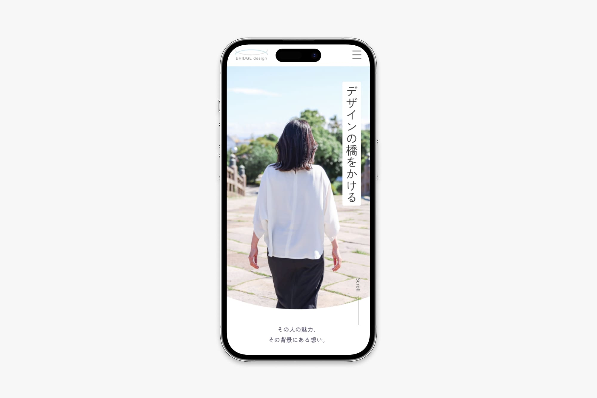

Works


ポートフォリオサイト（当サイト）
- 課題
-
作品をまとめて閲覧できるポートフォリオがない。
応募書類だけでは、自分の人柄や考え方を十分に伝えられない。
- 目的
- 採用担当者の方に作品やスキル、人柄を分かりやすく伝え、自分への理解を深めていただくことで、書類通過につながるポートフォリオを制作する。
- 制作意図
- 必要な情報を短時間で把握できるよう、情報の優先順位や視線の流れを意識して設計しました。また、作品・自己紹介・大切にしていることなどを整理して配置し、自分らしさが自然に伝わる構成を目指しました。
- 制作範囲
- デザイン・コーディング・ライティング
- 制作期間
- 2ヶ月（WF：10日間 / デザイン：20日間 / コーディング：1ヶ月）
- 使用ツール
- Illustrator / Figma / Visual Studio Code / GitHub